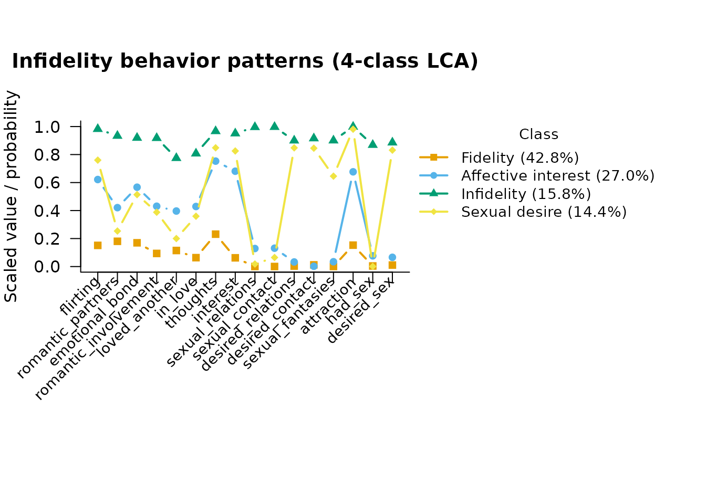

Infidelity Behavior Patterns: LCA with Covariates and a Distal Outcome
Source:vignettes/ventura_leon.Rmd
ventura_leon.RmdBackground
This vignette walks through Ventura-León et al. (2025),
“Exploring Infidelity Behavior Patterns in a Sample of Peruvian
Young Adults: A Latent Class Analysis,” using the
ventura_leon dataset bundled with mixtureEM
(?ventura_leon).
Four hundred Peruvian young adults (75.3% women, mean age 25.3) answered 16 binary items from the Multidimensional Infidelity Inventory-S (MII-S), each asking whether they had engaged in a particular unfaithful thought or behavior. The original study used latent class analysis (LCA) to identify subgroups with distinct patterns, then related class membership to sex, age, sexual orientation, and relationship duration.
We reproduce the class solution first, then improve on the original
covariate analysis: the paper assigned each respondent to their single
most likely class and ran chi-square/ANOVA tests on those labels, which
ignores classification uncertainty. mixtureEM’s
add_covariates() instead uses a bias-corrected multinomial
logistic regression (Vermunt, 2010) that properly accounts for it.
See ?ventura_leon for the full source and license
note.
The data
data(ventura_leon)
items <- ventura_leon[, 7:22] # the 16 infidelity items
names(items)
#> [1] "flirting" "romantic_partners" "emotional_bond"
#> [4] "romantic_involvement" "loved_another" "in_love"
#> [7] "thoughts" "interest" "sexual_relations"
#> [10] "sexual_contact" "desired_relations" "desired_contact"
#> [13] "sexual_fantasies" "attraction" "had_sex"
#> [16] "desired_sex"The 16 items are already binary (0 = never endorsed, 1 = endorsed),
with short informative names; see ?ventura_leon for each
item’s exact wording.
How many classes?
The paper compared 1- through 10-class solutions by BIC (their Table 2) and selected 4 classes. We do the same here.
selection <- compare_mixtures(X = items, measurement = "binary",
k_range = 1:6, n_init = 20)
#> Running Model Selection across K = 1 to 6...
#>
#> Fitting 1-class model...
#> Fitting 2-class model...
#> Fitting 3-class model...
#> Fitting 4-class model...
#> Fitting 5-class model...
#> Fitting 6-class model...
#>
#> === Model Selection Summary ===
#> Classes LL Params AIC BIC SABIC Entropy Unreplicated
#> 1 1 -3905.807 16 7843.615 7907.478 7856.709 1.000 FALSE
#> 2 2 -2900.078 33 5866.157 5997.875 5893.164 0.948 FALSE
#> 3 3 -2654.568 50 5409.136 5608.710 5450.056 0.934 FALSE
#> 4 4 -2531.130 67 5196.260 5463.688 5251.093 0.905 FALSE
#> 5 5 -2474.482 84 5116.963 5452.246 5185.709 0.928 FALSE
#> 6 6 -2423.385 101 5048.771 5451.909 5131.429 0.925 FALSE
#>
#> -> Best model according to BIC: 6 classesBIC keeps improving for a few classes past 4 (a common pattern in LCA, where the BIC curve is often quite flat near its minimum); we follow the paper in choosing 4 classes for interpretability, since it recovers a very clean, well-separated typology (see below).
Fitting the 4-class model
set.seed(1)
fit <- fit_mixture(items, n_classes = 4, measurement = "binary",
n_init = 30, max_iter = 2000)
fit
#> =========================================================
#> LATENT MIXTURE MODEL
#> =========================================================
#> Classes Estimated : 4
#> Estimation Method : 1-step
#> Converged : TRUE (in 84 iterations)
#> ---------------------------------------------------------
#> Log-Likelihood : -2531.13
#> Parameters : 67
#> AIC : 5196.26
#> BIC : 5463.69
#> SABIC : 5251.09
#> Rel. Entropy : 0.9046
#> Best solution : found by 7 of 30 starts
#> ---------------------------------------------------------
#> Class Weights (Sizes):
#> Class 1: 43.43%
#> Class 2: 27.46%
#> Class 3: 15.79%
#> Class 4: 13.32%
#> =========================================================
#> Type summary(model) for structural parameters or measurement_summary(model) for item parameters.Comparing to the published solution
The paper’s four classes were: Fidelity (42.5%, low on
everything), Affective interest (27.2%, moderate on
thought/attraction items), Infidelity (15.7%, high on nearly
every item), and Sexual desire (14.4%, high on
desire/attraction items but not overt behavior). Classes are sorted by
size, so class_sizes() lines up with that ordering:
class_names <- c("Fidelity", "Affective interest", "Infidelity", "Sexual desire")
class_sizes(fit)
#> class proportion n_expected n_modal
#> 1 1 0.4342541 173.70163 176
#> 2 2 0.2746087 109.84347 108
#> 3 3 0.1579380 63.17520 63
#> 4 4 0.1331992 53.27969 53The item-response probabilities per class come from
measurement_summary(), which prints the full table and also
returns it as a data frame for further use:
params <- measurement_summary(fit)
#> =========================================================
#> MEASUREMENT MODEL PARAMETERS
#> =========================================================
#>
#> CATEGORICAL PROBABILITIES
#> Indicator | Overall | Class 1 | Class 2 | Class 3 | Class 4
#> ----------------------------------------------------------------------
#> flirting | 0.497 | 0.154 | 0.638 | 0.982 | 0.754
#> romantic_partners | 0.375 | 0.183 | 0.418 | 0.934 | 0.250
#> emotional_bond | 0.445 | 0.172 | 0.582 | 0.920 | 0.491
#> romantic_involvement | 0.357 | 0.097 | 0.437 | 0.918 | 0.379
#> loved_another | 0.307 | 0.118 | 0.386 | 0.775 | 0.208
#> in_love | 0.323 | 0.066 | 0.432 | 0.807 | 0.356
#> thoughts | 0.578 | 0.236 | 0.765 | 0.967 | 0.843
#> interest | 0.480 | 0.070 | 0.674 | 0.951 | 0.858
#> sexual_relations | 0.195 | 0.000 | 0.136 | 0.996 | 0.002
#> sexual_contact | 0.203 | 0.000 | 0.133 | 0.997 | 0.064
#> desired_relations | 0.275 | 0.003 | 0.043 | 0.901 | 0.897
#> desired_contact | 0.273 | 0.012 | 0.029 | 0.916 | 0.862
#> sexual_fantasies | 0.245 | 0.000 | 0.056 | 0.901 | 0.653
#> attraction | 0.547 | 0.155 | 0.693 | 0.998 | 0.993
#> had_sex | 0.160 | 0.004 | 0.076 | 0.869 | 0.001
#> desired_sex | 0.282 | 0.010 | 0.076 | 0.887 | 0.879
#>
#> At the boundary: sexual_relations in class 1; sexual_contact in class 1; sexual_fantasies in class 1; had_sex in class 4. These probabilities have run to 0 or 1, so the class is defined partly by an item every case in it gives the same answer to, and their standard errors are not interpretable. There are two ways on: read it substantively, since an item every member of a class answers identically is often the finding rather than a fault; or, if that parameter needs a standard error, refit with a stronger prior than the default of 1 - `bayes_constants = list(categorical = 2)` - which holds the estimate off the edge at the cost of shrinking it slightly toward the item's marginal.
#> =========================================================Because the returned table is an ordinary data frame, follow-up questions take one line — for example, which behaviors the third-largest class endorses with high probability:
subset(params, class == 3 & estimate > 0.5)
#> block parameter item category class estimate overall
#> 3 <NA> probability flirting NA 3 0.9822261 0.4975
#> 7 <NA> probability romantic_partners NA 3 0.9339329 0.3750
#> 11 <NA> probability emotional_bond NA 3 0.9199585 0.4450
#> 15 <NA> probability romantic_involvement NA 3 0.9180926 0.3575
#> 19 <NA> probability loved_another NA 3 0.7750929 0.3075
#> 23 <NA> probability in_love NA 3 0.8074870 0.3225
#> 27 <NA> probability thoughts NA 3 0.9674325 0.5775
#> 31 <NA> probability interest NA 3 0.9509822 0.4800
#> 35 <NA> probability sexual_relations NA 3 0.9959057 0.1950
#> 39 <NA> probability sexual_contact NA 3 0.9968190 0.2025
#> 43 <NA> probability desired_relations NA 3 0.9011429 0.2750
#> 47 <NA> probability desired_contact NA 3 0.9158309 0.2725
#> 51 <NA> probability sexual_fantasies NA 3 0.9012937 0.2450
#> 55 <NA> probability attraction NA 3 0.9982136 0.5475
#> 59 <NA> probability had_sex NA 3 0.8685940 0.1600
#> 63 <NA> probability desired_sex NA 3 0.8865954 0.2825
plot(fit, class_labels = class_names,
main = "Infidelity behavior patterns (4-class LCA)")
Covariates: a stronger analysis than the original paper
The paper related class membership to sex, age, sexual orientation, and relationship duration by assigning each respondent to their single most likely class (the modal posterior) and then testing associations with separate chi-square tests and an ANOVA — a “classify-and-analyze” approach that treats class membership as if it were observed without error, which biases the association estimates toward the null (Bakk et al., 2014).
Instead, we hand the chosen model to add_covariates(),
which runs the bias-adjusted three-step analysis (Vermunt, 2010) on the
same solution we just inspected — the measurement model is not
re-estimated, so the classes cannot shift under our feet:
covariates <- ventura_leon[, c("sex", "age", "sexual_orientation",
"relationship_duration")]
fit_cov <- add_covariates(fit, covariates)
#> Using 'ML' bias correction (set `correction` to override).
results <- summary(fit_cov)
#> =========================================================
#> STRUCTURAL MODEL SUMMARY
#> =========================================================
#>
#> CATEGORICAL LATENT VARIABLE REGRESSION (CLASS PREDICTORS)
#> Reference Class: 1
#> Standard errors: Bakk-Oberski-Vermunt corrected (robust step 3, hessian step 1)
#> ---------------------------------------------------------
#> OR [95% CI] P-Value
#>
#> Class 2 ON
#> Intercept 1.627 [ 0.271, 9.772] 0.595
#> sex.Female 2.631 [ 1.070, 6.469] 0.035
#> age 0.929 [ 0.863, 1.000] 0.048
#> sexual_orientation.Nothtrsxl 0.948 [ 0.393, 2.288] 0.905
#> relationship_duration.Long 1.056 [ 0.488, 2.287] 0.890
#>
#> Class 3 ON
#> Intercept 0.230 [ 0.070, 0.753] 0.015
#> sex.Female 0.324 [ 0.172, 0.608] < .001
#> age 1.049 [ 1.005, 1.095] 0.029
#> sexual_orientation.Nothtrsxl 1.490 [ 0.596, 3.724] 0.393
#> relationship_duration.Long 0.602 [ 0.251, 1.442] 0.254
#>
#> Class 4 ON
#> Intercept 0.145 [ 0.042, 0.505] 0.002
#> sex.Female 0.588 [ 0.289, 1.197] 0.143
#> age 1.036 [ 0.994, 1.080] 0.097
#> sexual_orientation.Nothtrsxl 2.744 [ 1.157, 6.507] 0.022
#> relationship_duration.Long 1.195 [ 0.547, 2.613] 0.655
#> Abbreviated names:
#> sexual_orientation.Nothtrsxl = sexual_orientation.Not heterosexual
#>
#> OMNIBUS TEST PER COVARIATE (effect across all classes)
#> ---------------------------------------------------------
#> Wald Chi2 df P-Value
#> sex 22.971 3 < .001
#> age 11.944 3 0.008
#> sexual_orientation 6.404 3 0.094
#> relationship_duration 1.973 3 0.578
#> Note: a non-significant test beside large coefficients can be the
#> Hauck-Donner effect; confirm with wald_omnibus_test().
#> =========================================================The Standard errors: line records which variance
estimator produced the intervals. The default also carries the
uncertainty in the step-1 class solution into the step-3 coefficients
(Bakk et al., 2014): treating the classes as if they had been observed
rather than estimated makes the intervals too narrow. See
?covariate_se.
summary() also returns its tables invisibly, so the odds
ratios are available as a data frame:
head(results$coefficients)
#> class term estimate se z
#> 1 2 Intercept 0.48662640 0.91475043 0.5319772
#> 2 2 sex.Female 0.96734780 0.45899305 2.1075435
#> 3 2 age -0.07369463 0.03734657 -1.9732638
#> 4 2 sexual_orientation.Not heterosexual -0.05372910 0.44969586 -0.1194787
#> 5 2 relationship_duration.Long 0.05461223 0.39430951 0.1385009
#> 6 3 Intercept -1.46794278 0.60420897 -2.4295283
#> p OR OR_lower OR_upper
#> 1 0.59474177 1.6268187 0.27082445 9.7721571
#> 2 0.03507050 2.6309574 1.07006717 6.4686937
#> 3 0.04846551 0.9289553 0.86338557 0.9995048
#> 4 0.90489608 0.9476888 0.39253366 2.2879925
#> 5 0.88984454 1.0561310 0.48761242 2.2874985
#> 6 0.01511848 0.2303990 0.07049649 0.7529976Reference class 1 is Fidelity (the largest class). Reading the odds ratios against that reference:
- Sex. Women have higher odds of Affective interest relative to Fidelity, and much lower odds of Infidelity relative to Fidelity — in line with the paper’s finding that “men were more likely to belong to the sexual desire class and women to the emotional interest and fidelity classes.”
- Age. Older respondents have higher odds of Infidelity relative to Fidelity, matching the paper’s finding that age was significantly related to class membership.
- Sexual orientation. One row looks like a discovery the paper’s classify-and-analyze approach missed: non-heterosexual respondents have higher odds of Sexual desire relative to Fidelity (OR = 2.75, p = .022). But the omnibus test for sexual orientation — the one built to ask whether the covariate distinguishes any pair of classes at all — is not significant here either (Wald chi-square = 6.44, df = 3, p = .092), matching the paper’s own null result. With three pairwise contrasts tested, a single row below .05 is not strong evidence on its own; read the omnibus row first, and treat an isolated significant contrast beside a non-significant omnibus test as a hypothesis worth a better-powered look, not a confirmed finding.
- Relationship duration. Neither approach finds a significant association, consistent with the paper.
This is a good illustration of why mixtureEM applies a bias correction whenever classes are related to external variables: the “obvious” approach of classifying and then testing is only valid when classification is (almost) perfect, which is rarely true in practice.
A distal outcome: mean age by class
Covariates ask “who ends up in which class?”. The complementary
question — “how do the classes differ on some outcome?” — is a
distal outcome analysis, and it reuses the same fitted model
through add_outcome(). Here we describe the classes by
their mean age (the BCH correction is the default for a continuous
outcome; Bakk & Vermunt, 2016). Age already entered the model as a
covariate above, so treating it as a distal outcome too does not answer
a substantively new question — we reuse it purely because it is a
continuous variable already at hand, to keep the example self-contained;
a real distal-outcome analysis would pick a variable the classes are
actually expected to predict.
fit_age <- add_outcome(fit, ventura_leon$age)
#> Outcome treated as continuous (set `outcome_type` to override).
#> Using 'BCH' bias correction (set `correction` to override).
age_results <- summary(fit_age)
#> =========================================================
#> STRUCTURAL MODEL SUMMARY
#> =========================================================
#>
#> CONTINUOUS DISTAL OUTCOME (MEANS)
#> ---------------------------------------------------------
#>
#> Omnibus test (class differences): Wald chi^2(3) = 17.84, p < .001
#>
#> Mean [95% CI] SE
#> Class 1 25.235 [24.181, 26.289] 0.538
#> Class 2 23.142 [22.007, 24.276] 0.579
#> Class 3 27.554 [25.329, 29.780] 1.135
#> Class 4 27.148 [24.897, 29.398] 1.148
#>
#> Pairwise class differences:
#> Difference [95% CI] P-Value
#> Class 2 vs 1 -2.093 [-3.717, -0.469] 0.012
#> Class 3 vs 1 2.319 [-0.143, 4.781] 0.065
#> Class 4 vs 1 1.913 [-0.568, 4.393] 0.131
#> Class 3 vs 2 4.412 [ 1.910, 6.914] < .001
#> Class 4 vs 2 4.006 [ 1.426, 6.586] 0.002
#> Class 4 vs 3 -0.407 [-3.572, 2.759] 0.801
#> =========================================================
age_results$outcome$means
#> class mean se lower upper
#> 1 1 25.23505 0.5377852 24.18099 26.28911
#> 2 2 23.14177 0.5788384 22.00725 24.27630
#> 3 3 27.55414 1.1354995 25.32856 29.77972
#> 4 4 27.14763 1.1481233 24.89731 29.39795The omnibus Wald test in the printed output asks whether the class means differ at all, before the per-class table is read.
References
Bakk, Z., Oberski, D. L., & Vermunt, J. K. (2014). Relating latent class assignments to external variables: Standard errors for correct inference. Political Analysis, 22(4), 520–540. https://doi.org/10.1093/pan/mpu003
Bakk, Z., & Vermunt, J. K. (2016). Robustness of stepwise latent class modeling with continuous distal outcomes. Structural Equation Modeling, 23(1), 20–31. https://doi.org/10.1080/10705511.2014.955104
Ventura-León, J., Reyes, A., Valencia, P. D., Tocto-Muñoz, S., Gamboa-Melgar, G., Ruiz-Castro, J., & Lino-Cruz, C. (2025). Exploring infidelity behavior patterns in a sample of Peruvian young adults: A latent class analysis. Journal of Marital and Family Therapy, 51, e70066. https://doi.org/10.1111/jmft.70066
Vermunt, J. K. (2010). Latent class modeling with covariates: Two improved three-step approaches. Political Analysis, 18(4), 450–469. https://doi.org/10.1093/pan/mpq025